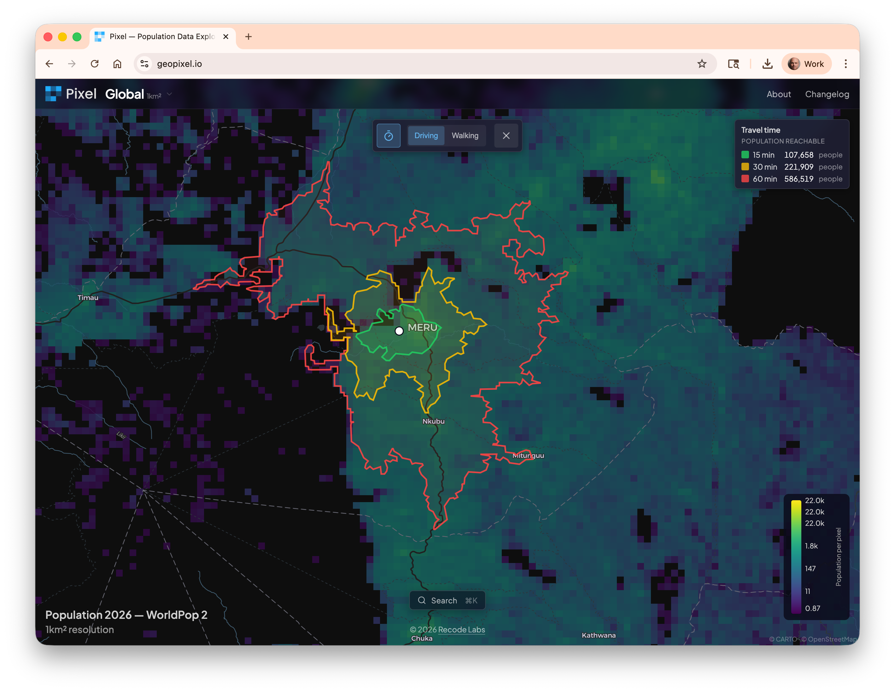

Elly is an ambient listener for clinics and classrooms. It records the room, transcribes the audio, then uses AI to extract the answers programs actually want — did the clinic open on time, were protocols followed, how many visits were seen, was the curriculum covered, how often did students ask questions. Insight for supervisors, coaching for staff, no added burden. Cheap to run, easy to deploy.
A geospatial coverage estimator built with UNICEF and Bangladesh's MIS-DGHS. Combines high-resolution satellite imagery, an adaptive sampling algorithm, and offline mobile data collection to estimate immunization coverage at the household level — even in hard-to-reach areas where traditional surveys fall short. Outputs a predictive coverage map for every structure, with uncertainty scores so health teams know where to look next.
Browse health data in an accessible way. View, edit, and add resources; create, author, and fill in questionnaires; dedupe records; and run the admin tasks the spec doesn't make easy. Connects to Google Healthcare API and any FHIR server. The FHIR browser you didn't realize you needed — open source.

Pixel is a population and geospatial data explorer built to answer the question every planner starts with: where do people actually live? The initial focus is making the WorldPop 2 project — a 100m² resolution population map covering 242 countries from 2025–2030 — usable in a browser. Extract populations from drawn or uploaded shapes, or by travel time. Built to be expanded with other datasets over time.